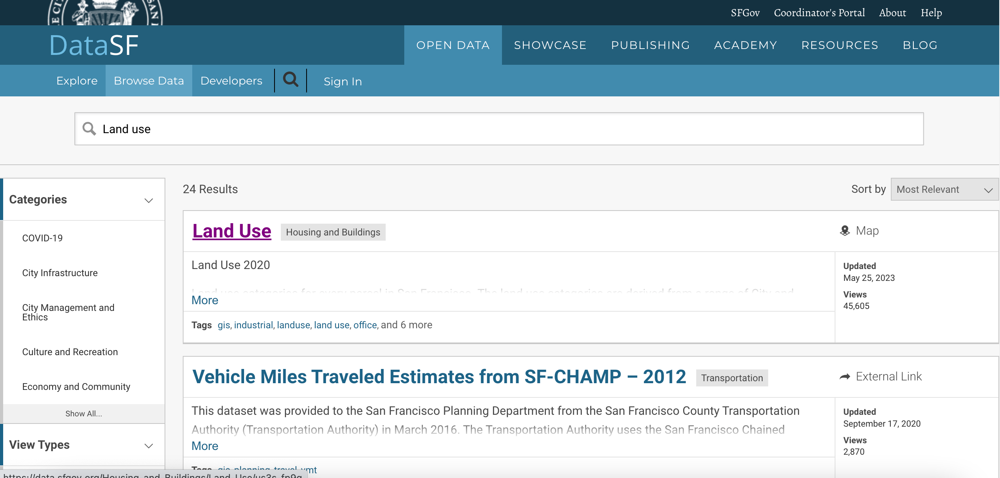
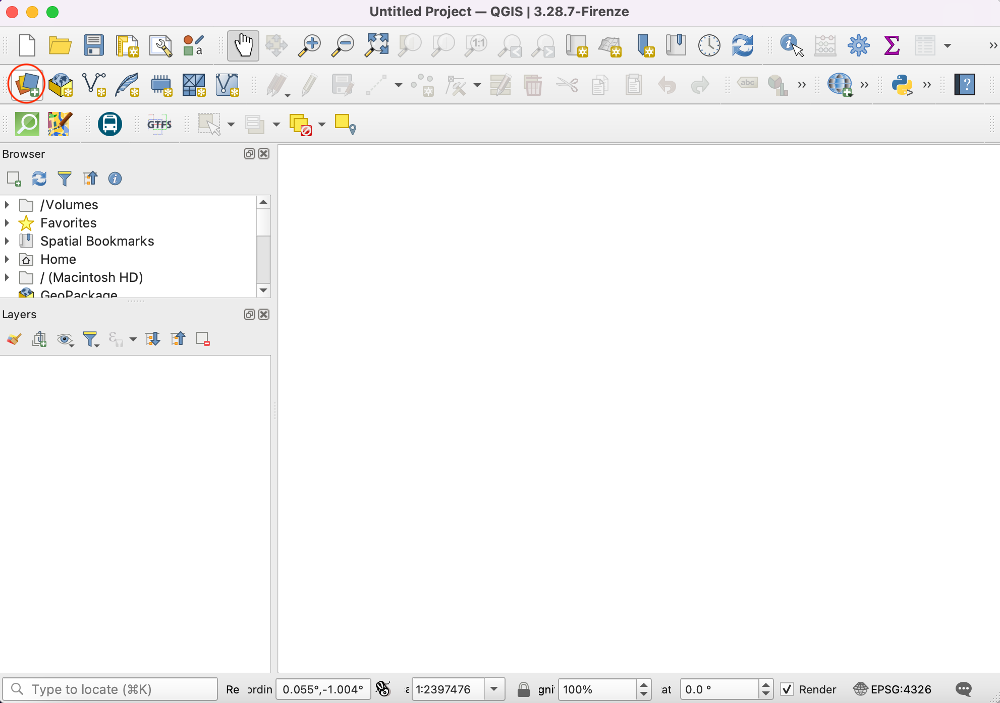
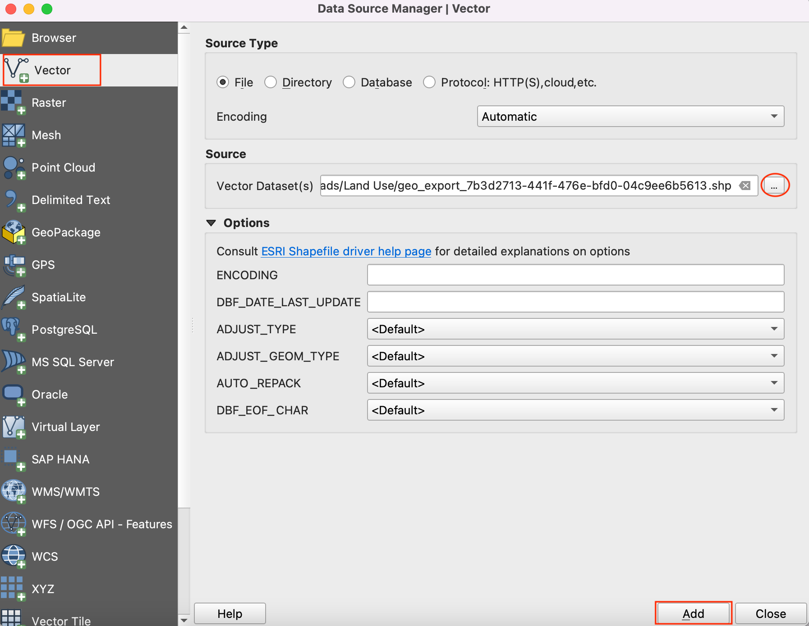
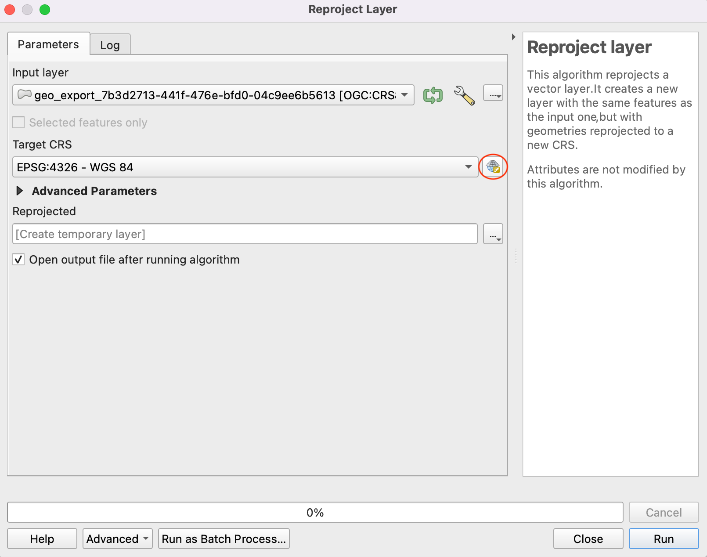
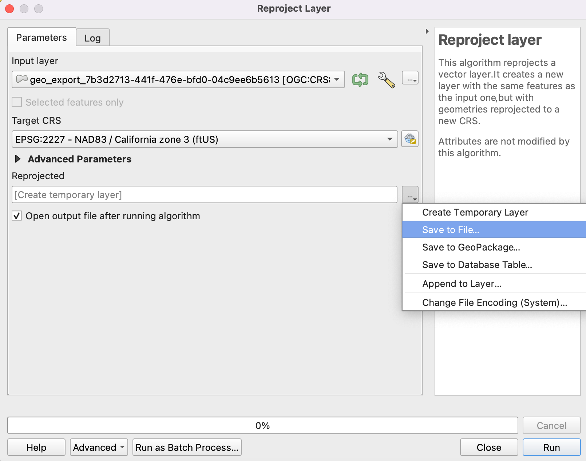
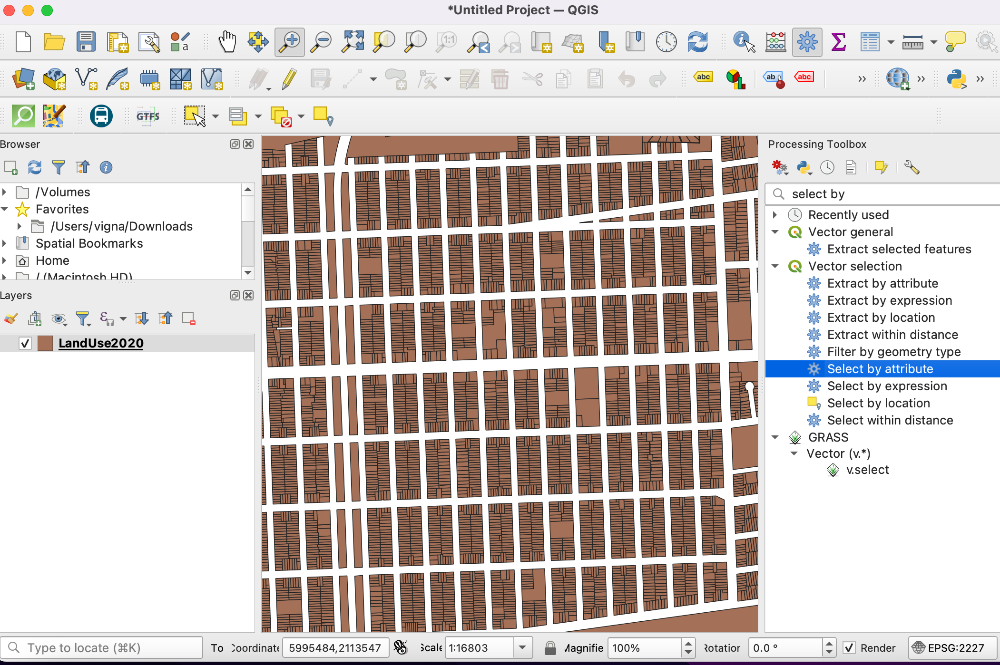
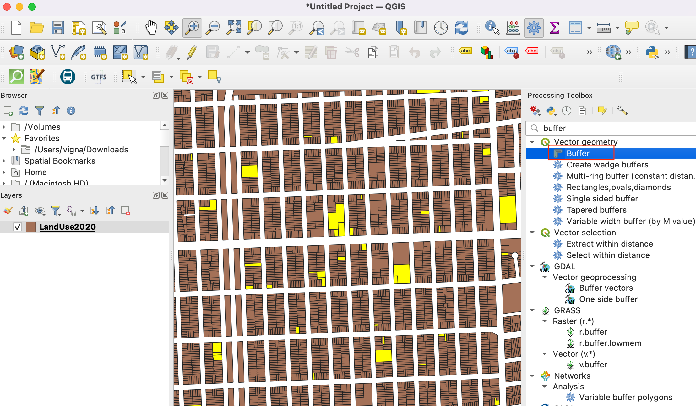

Bufferzones voor landgebruik bepalen (QGIS3)¶
In deze handleiding zult u werken met gegevens voor landgebruik van een stad en bufferzones bepalen rondom een bepaald perceel land. Dergelijke analyses zijn vereist om een corridor met beperkingen vast te leggen voor zware vervuiling of verkeerslawaai.
Overzicht van de taak¶
We zullen beginnen met een shapefile van percelen land voor de stad San Francisco en geoprocessing en technieken voor ruimtelijke analyses gebruiken om een buffer voor een gebied met voorwaarden te bepalen rondom alle eigendommen met institutioneel landgebruik.
Andere vaardigheden die u zult leren¶
Rechthoekige buffers maken in QGIS
Een ruimtelijke index gebruiken om analyse te versnellen
De gegevens ophalen¶
De gegevens komen van de stad San Francisco in de vorm van polygonen van percelen met een attribuut dat de categorieën voor landgebruik aangeeft. U vindt de gegevens voor deze handleiding in het DataSF Open Data Portal.
Laten we eens naar de stappen kijken om een polygoon shapefile, met categorieën voor landgebruik voor elk perceel in San Francisco, te downloaden.
Ga naar het portaal met de gegevens - https://datasf.org/opendata/. Zoek naar het sleutelwoord
Land usein de zoekbalk.
Klik op het eerste zoekresultaat om de gegevens te visualiseren en te exporteren.
U zult de gegevens en de attributen zien. Klik op Export om de gegevens van
Land Use 2020te downloaden.
Klik, in de opties voor exporteren, op Shapefile om de polygoon shapefile met de gegevens te downloaden.

Een zip-bestand van het landgebruik zal worden gedownload. Schakel naar de tab About om informatie te lezen over categorieën voor landgebruik en eenheden, wat nuttig zal zijn in het vervolg van deze handleiding.

Voor het gemak kunt u hieronder direct een kopie downloaden van de shapefile:
Procedure¶
Open QGIS. Klik op het pictogram om de laag toe te voegen.
Schakel naar de tab Vector en navigeer naar de shapefile met het landgebruik. Klik op Toevoegen.
Merk de naam voor het CRS op aan de rechteronderkant van QGIS. Het geeft aan dat de gegevens in het geografische coördinatensysteem
OGC:CRS84zijn. Klik erop.
Het dialoogvenster Project Coördinaten ReferentieSysteem (CRS) zal het geselecteerde CRS weergeven als
WGS 84 (CRS 84). De maateenheid voor dat CRS isDegree. Alle geoverwerking op deze laag zal worden gedaan in de eigen eenheden van het CRS. De eenheid degree is niet de juiste voor deze analyse.
We zullen de laag opnieuw projecteren in het voor de regio geschikte geprojecteerde CRS -
NAD83 / California zone 3 (ftUS). Dat isEPSG:2227wat datum NAD83 gebruikt met maateenheden in feet. Ga naar .
Selecteer, in het dialoogvenster Laag opnieuw projecteren, de geladen laag als Invoerlaag. Klik op het pictogram naast het selectievak om het Doel-CRS te selecteren.
Search for
EPSG:2227in the bar and select theNAD83 / California zone 3 (ftUS)CRS. Click Go back to continue.
Sla de uitvoer Opnieuw geprojecteerd op. Vergroot de opties voor bladeren en selecteer Opslaan als bestand.
Sla de Shapefile met de uitvoer op in uw gekozen map als
LandUse2020.shp. Selecteer de optie Uitvoerbestand openen na uitvoeren van algoritme om de opnieuw geprojecteerde laag toe te voegen aan QGIS.
Verwijder de originele laag met CRS WGS 84 uit QGIS. Selecteer de laag en klik op het symbool Laag verwijderen.

We will continue the process with the reprojected layer. As we saw in the About section of the downloaded shapefile in the data portal, the classification is as follows.
CIE = Cultureel, Institutioneel, Onderwijs
MED = Medisch
MIPS = Kantoren (Management, Informatie, Professionele services)
MIXED = Gemixt gebruik (zonder bewoning)
MIXRES = Gemixt gebruik (met bewoning)
PDR = Industrieel (Productie, Distributie, Reparatie)
RETAIL/ENT = Retail, Entertainment
RESIDENT = Bewoning
VISITOR = Hotels, Services voor bezoekers
VACANT = Vacant
ROW = Voorrang
OPENSPACE = Open ruimte
Voor deze handleiding zijn we alleen geïnteresseerd in het landgebruik Institutioneel. We kunnen dus bevragen op de waarde CIE in de attributentabel. Ga naar .

Zoek naar het gereedschap Op attribuut selecteren in de Toolbox van Processing. Dubbelklik erop om het te openen.

Stel, in het dialoogvenster Op attribuut selecteren,
LandUse2020in als de Invoerlaag. Selecteerlanduseals het Attribuut selecteren en voerCIEin als de Waarde. Klik op Uitvoeren.

U zult zien dat de percelen die voldoen aan aan onze query zijn geaccentueerd in geel. Dit zijn alle percelen die behoren bij institutioneel landgebruik in de stad.

Nu kunnen we een buffer maken rondom de geselecteerde percelen. Terug in het hoofdvenster van QGIS, open de Toolbox van Processing. Zoek en lokaliseer het gereedschap Buffer. Dubbelklik erop om het te openen.

Selecteer, in het dialoogvenster Buffer, LandUse2020 als de Invoerlaag. Selecteer het vak Alleen geselecteerde objecten zodat de buffer alleen van toepassing zal zijn op de objecten van het geselecteerde institutionele landgebruik. We zullen een bufferzone maken van 100ft rondom elk perceel. Voer 100 voet in als de Afstand. De standaard buffers zijn rond van vorm. Omdat we bezig zijn met gegevens van percelen, is een rechthoekig buffergebied beter van toepassing, waarbij elke rand van het perceel zal worden verschoven met de bufferafstand. Selecteer
Vierkantals de Stijl eindkap enHoekigals de Verbindingsstijl. Klik op de knop Bladeren naast Gebufferd en selecteer Opslaan als bestand.

Voer als naam voor de uitvoer
buffer.shpin en klik op OK. Klik op Uitvoeren.

Als de verwerking is voltooid zal een nieuwe laag zijn toegevoegd aan QGIS. Deze polygonen geven de bufferzone met beperkingen weer rondom het institutionele landgebruik.

We weten nu welke gebieden van de stad vallen in de zone met beperkingen. Het zou nuttig kunnen zijn om alle percelen te identificeren die in deze zone vallen en een attribuut toe te voegen dat een beperking toepast op dat perceel. Laten we eerst een kolom toevoegen aan de polygonen van de buffers. Zoek naar in de Toolbox van Processing. Dubbelklik erop om het te openen.

In the Field Calculator dialog, ensure buffer is selected as the Input layer. We don’t need to save this layer, so leave the Output file field empty. Enter
RESTRICTEDas the result Field Name. Set the Result field type toString. TypeYesas the Expression. Click Run.

Een nieuwe laag Berekend zal worden toegevoegd aan QGIS. Open de Attributentabel en verifieer dat er een nieuwe kolom, genaamd RESTRICTED, met de waarde Ja bestaat in deze laag.

22. Next step is to do a Spatial Join to add this attribute to the original parcels layer based on which parcels intersect with the buffer zone. The LandUse2020 layer has more than 100,000 elements. We will add spatial indexing to the features to improve the performance and speedup the spatial join operation.
Check out the course Spatial Indexing section to understand more about this.
Now, search and locate the tool from the Processing Toolbox and double-click to open.

Select
LandUse2020as Input layer and click Run.
The spatial index is created for the layer. You can verify this by checking the property of the layer. Right-click on the layer and click Properties.

Schakel naar de tab Bron en kijk in het gedeelte Geometrie. Het geeft aan dat de ruimtelijke index bestaat.

Nu kunnen we ruimtelijk samenvoegen. Zoek naar het gereedschap in de Toolbox van Processing. Dubbelklik erop om het te openen.

We willen Samenvoegen met objecten in de laag
LandUse2020In vergelijking met de laagBerekend. We willen attributen samenvoegen van objecten die elkaar kruisen. Selecteer het vak voorkruisen met. Klik op de knop Bladeren naast Velden die moeten worden toegevoegd.

Selecteer alleen het veld
RESTRICTEDen klik op OK.

For Join Type, select
Take attribute of the first matching feature only. Next, click … next to Joined layer and select Save to File.

Voer in Samengevoegde laag als naam in
LandUseWithRestrictions.shpen klik op OK. Klik op Uitvoeren.

Als de verwerking is voltooid zult u een nieuwe laag
LandUseWithRestrictionskrijgen. Open de attributentabel en bekijk de kolomRESTRICTED. De percelen die vallen binnen 100 voet van een institutioneel perceel hebben nu de waardeJa, wat aangeeft dat er een beperking geldt voor dat perceel. Andere percelen hebben een waardeNULL, die aangeeft dat er geen beperkingen zijn.
If you want to give feedback or share your experience with this tutorial, please comment below. (requires GitHub account)